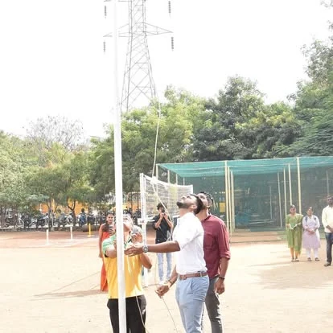
Process. Progress. Perform. This is where elite coaching meets daily grind.
From training camps to daily academy sessions, hands-on coaching with young players is the constant across every stop of the journey.
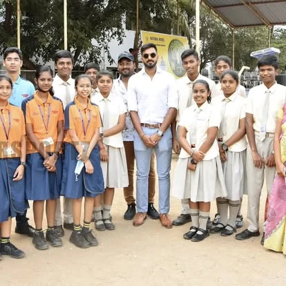
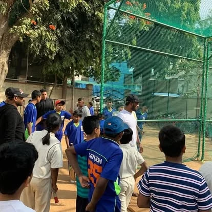
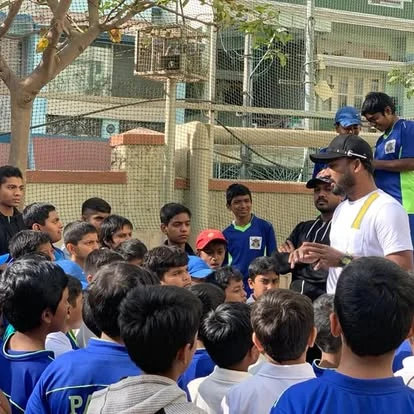
Batting Fundamentals, Bowling Mechanics, Fielding Drills, and Match Simulation across TEST, ODI & T/20 Formats.
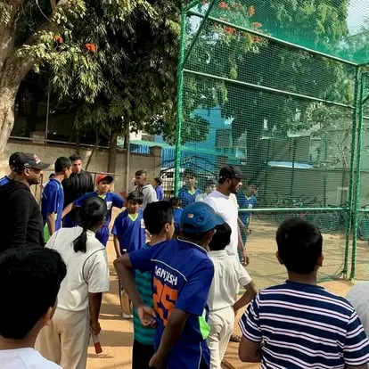
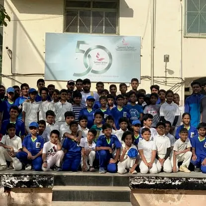
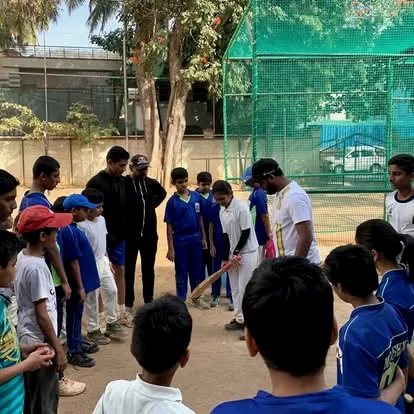
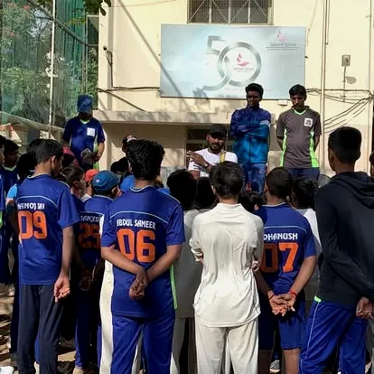
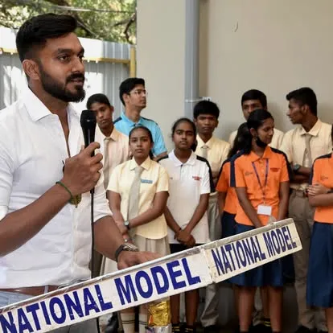
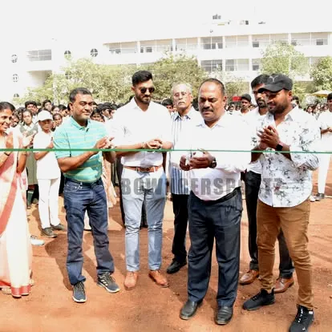
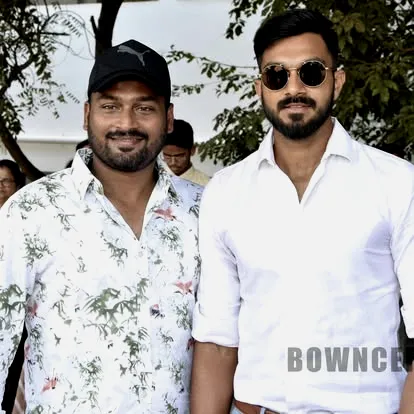
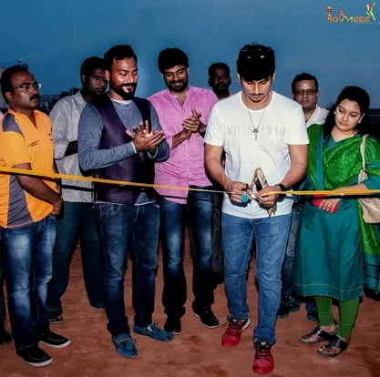
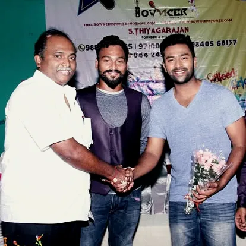
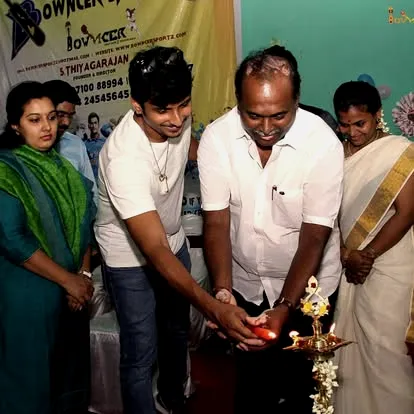
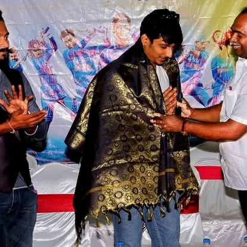